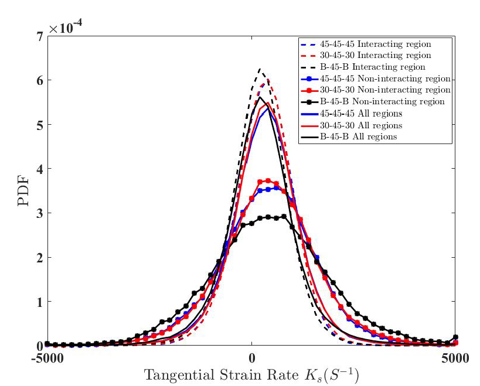

Prelude
In a meticulously planned but fairly quick turn of events, I had joined Indian Institute of Science, Bangalore as a Research Assistant in High Speed Turbulent Combustion & Spray Lab in the Dept. of Aerospace Engineering under the guidance of Prof. S. Chaudhuri (now at University of Toronto). My tenure started from 10th May, 2019.
In the first few days, I talked to the fellow students (PhD, M.Tech and current project assistants) about the projects they were involved in. This gave me a fair idea about the research work going in this field. Since, I did not have an extensive background in Turbulent Combustion (or even combustion for that matter, coming from product design and mechatronics background in undergrad), I had to dug into the literature to understand the physics behind our experiment. Moreover, the computational work excited me more as I wanted to strengthen my analytical skills.
After few days, I chose to work with one of the PhD students who was trying to understand the swirling turbulent flame interaction in land-based gas turbine engines through PIV (Particle Image Velocimetry) and PLIF (Planar Laser Induced Fluorescence) imaging techniques. Understanding the right dynamics behind flame interaction in multi-swirler setup is crucial in the sense that precautionary steps could be taken in advance to prevent blow off. This is one of the key problems that results in huge monetary losses to both the suppliers and the consumers.
Research Statement
Premixed or partially premixed swirling flames are used in gas turbine engines due to their compactness, high ignition efficiency and low \(NO_{x}\) emissions. Operating in lean mode, the interaction between combustor pressure oscillations and reactants' supply rates produces equivalence ratio perturbations leading to combustion instabilities. We are trying to comprehend this phenomenon using a model combustor. We consider a small section of the annular arrangement from CFM-56 Turbofan Engine with three swirlers for studying the flame interaction. Moreover, the swirlers are arranged in a linear fashion for the experiment, considering the large radius of annular ring. This facilitates in emulating the actual environment in the lab. The fuel used is simply Methane (CH4) along with air for a lean premixed flow.
Objective
During the course of my Research Assistantship, I modified and used numerous MATLAB files which has to be used in sequence in order to extract useful information from the sPIV (Stereoscopic PIV) and PLIF flame images. While the former provided the velocity information in a flow field, the later gives an image file of the flame within definite user-defined bounds. The MATLAB codes took the .vc7 and .im7 files as inputs and we used PIVMat toolbox with ReadIMX package to work with these files.
We needed to compute critical parameters (normal, curvature, strain rate, etc.) from the flame images taken for different swirler-configurations (varying swirler angles between 30 and 45 or blocking one/two of the swirlers altogether). We correlated these parameters to blowoff-phenomena through a Probability Distribution Function (PDF).
Later, I briefly worked with Prof. Konduri Aditya from the Dept. of Computational and Data Sciences on predicting the blowoff phenomena using Machine Learning.
Image Processing
The processing was done in following [higher-level] sequence -
- For a given dataset, transverse through the .im7 image files and extract the flame edges using Canny Edge Detection algorithm. Store the edge data in corresponding edge file for each image. Discard the ones for which edges could not be detected properly.
- Load the edge file one by one and manually clean the image (a tedious and painstaking process). Update the edge files with the refined edge data.
-
Save the edge data, within the desired bounds, of all the images into a 3-dimensional
imagematrix (.mat file). Similarly, save velocity information for each image from .vc7 file invmatrix and store the original .im7 images inimmmatrix files. -
Calculate the normal using gradients from the edge data and curvature using the formulae : \(C = \frac{x'y'' - y'x''}{{(x'^{2} +y'^{2})}^{\frac{3}{2}}}\)
-
Calculate the 2D tangential strain rate using the formulae : \(K = (1-n_{x}^{2})\frac{\partial u}{\partial x} + (1-n_{y}^{2})\frac{\partial v}{\partial y} + n_{x}n_{y}(\frac{\partial u}{\partial y} + \frac{\partial v}{\partial x})\)
A turbulent premixed flame can be thought of as a thin flexible surface propagating in a flow filed, which may get distorted by the strong velocity gradients as well as the large-scale flow structures present there. This can result in excessive localized straining of the flame, which may proceed to extinction, if the residence time scales are large.
For calculating the strain rates, velocity gradients in all the three directions are required which is not available from 2D3C (2-Dimensional 3-Center) stereoscopic PIV measurements. Consequently, only the in-plane (x-y plane) components of strain rates are computed.
- Combine all the strain rates into a single matrix and plot the Probability Distribution Function (PDF)

We did this for different swirler configurations in longitudinal (\(r-\theta\) plane) and transverse (\(r-z\) plane) for both normal and blowoff conditions. A few of these are shown in the screenshot below -
Validating MATLAB Code Analytically
One of the major challenge of image processing through MATLAB codes was to validate if the computation agreed with the analytical solution. The caveat of using in-built MATLAB functions is deviating from valid solutions because of their implicit nature. It becomes hard to catch the error the further one moves along the sequence described above. I tried several approaches (using the already available image file, creating my own data emulating an image file, and finally creating a sample flow field and running it through the algorithm since the Physics of the sample flow around certain geometries are well known). The final methodology is explained below.
Creating struct field
You can find all the files I used for analytical validation here.
Step1 - I used a uniform and doublet flow fields to create a source-sink pair to generate the velocity matrix and saved everything in a structured form. Similarly, imm and image (edge) matrices were generated by taking a rectangle in the flow field. After running the usual steps I had used for flame images, all the matrices were generated (normals, curvature, strain rate, etc.).
Step2 - The analytical values for the tangential strain rate were taken to be \(\frac{du}{dx}\) and \(\frac{dv}{dy}\) along the horizontal and vertical line respectively.
When plotting the strain rate matrix obtained in step 1, I get two rectangles - outer and inner ones. I don't know why it is happening. While running the code for flame edges, it never happened. I will look into the reason. Anyway, I took both the outer and inner rectangles for comparison.
For comparing the values, I excluded the corner values because they will be erratic due to the differences in du/dx and dv/dy values in those cells. Then I calculated the absolute differences between the corresponding cells and averaged them to find the average percentage error which comes out to be 2.75% and 4.24% for outer and inner rectangle respectively.
All the matrices are there in the vmatrix.xlsx excel sheet. Everything has been color-coded in the final 'Difference' workbook, the meanings of which have been explained at the bottom.
The average difference of ~2-3% shows that our code gives almost correct values.